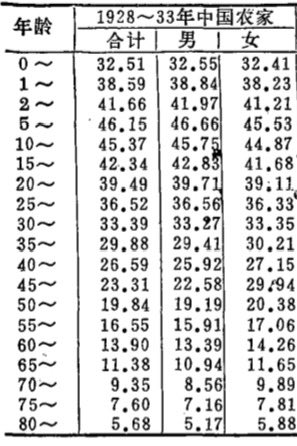

RT @Signalman_Free: JH氏在操弄数据方面就离开了他的舒适区，首先JH氏要搞明白，中国的条件和印度是不能直接对比的，中国地处温带大陆气候，长年气温稳定，雨水充沛，主要产粮区的黄河，长江流域除了十几年一发的大水灾基本不存在季节性的自然灾害。
而印度的粮食主产区旁…

而印度的粮食主产区旁…

JH氏在操弄数据方面就离开了他的舒适区，首先JH氏要搞明白，中国的条件和印度是不能直接对比的，中国地处温带大陆气候，长年气温稳定，雨水充沛，主要产粮区的黄河，长江流域除了十几年一发的大水灾基本不存在季节性的自然灾害。
而印度的粮食主产区旁遮普-哈里亚纳则是典型的季风气候。 https://t.co/5BzKygZU1Z https://t.co/a2ojA1cE8P
而印度的粮食主产区旁遮普-哈里亚纳则是典型的季风气候。 https://t.co/5BzKygZU1Z https://t.co/a2ojA1cE8P